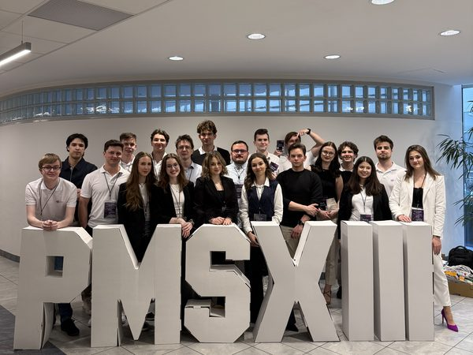

Co to PM Session?
PM Session to flagowa, coroczna konferencja poświęcona zarządzaniu projektami, organizowana przez koło naukowe Project Management Group na Wydziale Zarządzania Politechniki Wrocławskiej. Program łączy prelekcje praktyków, warsztaty i przestrzeń do networkingu. Wydarzenie jest otwarte dla studentów wszystkich kierunków oraz dla osób pracujących już w projektach. Każdą edycję przygotowuje od podstaw zespół organizacyjny PMG.

Prelegenci
-
Prelekcja: „Project Manager – influencer zmiany”
Lider transformacji technologicznej i operacyjnej, na co dzień związany z globalną firmą konsultingową BPX S.A. Realizował strategiczne projekty m.in. dla BMW, Scanii, agencji bezpieczeństwa UE oraz w sektorach bankowym i FMCG. Wykładowca, mentor i ekspert NCBR.
-
Warsztat: „Zapomnij o wszystkim, czego się nauczyłeś na studiach. Oduczanie jako Twoja supermoc w zarządzaniu projektami”
Doradca biznesowy z 15-letnim stażem w globalnym biznesie (IT, Sales, Omnichannel). W zarządzaniu zmianą stawia na praktykę.
-
Wspólny warsztat z Wiktorem Wołoszczukiem
Warsztat: „Od strategii do codziennych działań: czego podejście Toyoty uczy o zarządzaniu zmianą”
dr inż., adiunkt na PWr i globalny ekspert TWI/Lean. Szkolił kadrę w ponad 60 zakładach na 4 kontynentach (m.in. Volvo, IKEA, Philips). Łączy Lean z AI i technologią blockchain.
-
Wspólny warsztat z Bartoszem Misiurkiem
Warsztat: „Od strategii do codziennych działań: czego podejście Toyoty uczy o zarządzaniu zmianą”
Psycholog biznesu i współzałożyciel Kata School Poland. Ponad 20 lat doświadczenia menedżerskiego. Ekspert od budowania zaangażowania i przywództwa w zmiennym środowisku VUCA.
-
Warsztat: „Dyrektywa NIS2 jako projekt zmiany w czasie transformacji energetycznej”
Dyrektor ds. Cyberbezpieczeństwa OT w Transition Technologies-Control Solutions. Absolwent Politechniki Wrocławskiej, certyfikowany specjalista normy ISA/IEC 62443. Praktyk z 10-letnim stażem w integracji systemów automatyki i cyberbezpieczeństwa.
-
Prelekcja: „21,5 miliona złotych i zero przychodów – jak zarządzać zmianą, kiedy kończy się paliwo”
Absolwent PWr, doktor nanotechnologii z 20-letnim globalnym doświadczeniem (m.in. współpraca ze SpaceX i ASIC). Seryjny startupowiec deep-tech, laureat Edison Award i CES Innovation. Obecnie CTO Orthoget S.A. oraz wykładowca SGH.
-
Warsztat: „Zarządzanie zmianą w formie projektu: wyznaczenie i sterowanie zakresem zmiany”
Kierownik finansów i Przewodniczący Komisji Rewizyjnej w IPMA Young Crew. Wieloletni analityk ds. bezpieczeństwa i obronności w Klubie Jagiellońskim. Praktyk z korporacyjnym doświadczeniem.
-
Warsztat: „Zmiana 2.0 – Rapid Change Management z pomocą AI”
Ekspert IT Operations & Support, łączący świat biznesu i innowacji. Prowadzi szkolenia z AI i Design Thinking. Specjalista od automatyzacji i „ogarniania chaosu”, z 20-letnim doświadczeniem.
-
Warsztat: „Kapitał psychologiczny: ukryty zasób Project Managera”
Ekspertka od „ludzkiej strony projektu” — opowiada o kapitale psychologicznym, budowaniu odporności zespołu na zmianę i metodach z psychologii biznesu stosowanych w zarządzaniu projektami.
-
Prelekcja: „Kim jestem tak naprawdę, czyli dlaczego to zmiana mnie przeraża?”
Przedsiębiorca, trener i coach biznesu, speaker. Dyrektor zarządzający w Klose Brothers Polska oraz wykładowca PASB. Ponad 25-letnie doświadczenie w tradycyjnych i nowoczesnych przedsiębiorstwach. Twórca programu „Wewnętrzna Siła”.
Harmonogram
8:30
Rejestracja
9:00
Oficjalne rozpoczęcie konferencji
9:15
Paweł Sawicki „Project Manager – influencer zmiany”
10:303 sesje
równoległeMarcin Orocz
„Zapomnij o wszystkim, czego się nauczyłeś na studiach. Oduczanie jako Twoja supermoc w zarządzaniu projektami”
Bartosz Misiurek + Wiktor Wołoszczuk
„Od strategii do codziennych działań: czego podejście Toyoty uczy o zarządzaniu zmianą”
Paweł Sukiennik
„Dyrektywa NIS2 jako projekt zmiany w czasie transformacji energetycznej”
12:15
Wojciech Buła „21,5 miliona złotych i zero przychodów – jak zarządzać zmianą, kiedy kończy się paliwo”
13:15
Poczęstunek w Kawiarence
13:45
Networking
14:153 sesje
równoległeYevhen Khimichuk
„Zarządzanie zmianą w formie projektu: wyznaczenie i sterowanie zakresem zmiany”
Marek Malinowski
„Zmiana 2.0 – Rapid Change Management z pomocą AI”
Aleksandra Penza
„Kapitał psychologiczny: ukryty zasób Project Managera”
16:00
Andrzej Klose „Kim jestem tak naprawdę, czyli dlaczego to zmiana mnie przeraża?”
17:00
Oficjalne zakończenie konferencji
PM Session w liczbach
Wszystkie edycje konferencji, od I do XIV.
- edycji
- 14
- prelekcji
- 68
- prelegentów
- 201
- uczestników
- 1604
- warsztatów
- 111
- symulacji
- 8
Dane szacunkowe — metodologia liczenia edycji I–XIV nie jest w pełni udokumentowana.
Kolejna edycja
Szczegóły kolejnej edycji PM Session wkrótce